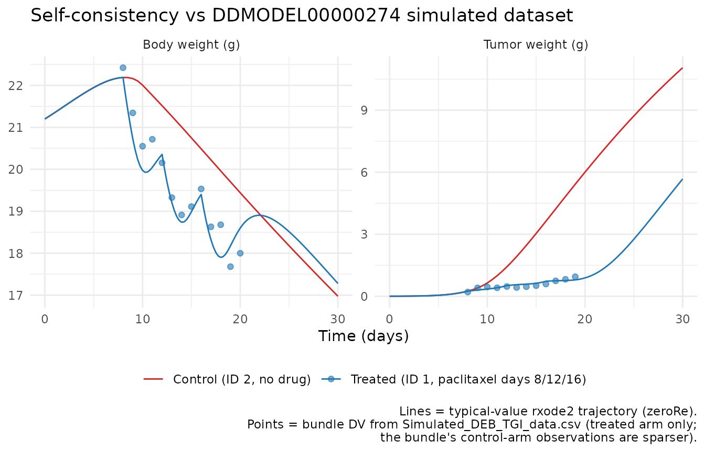
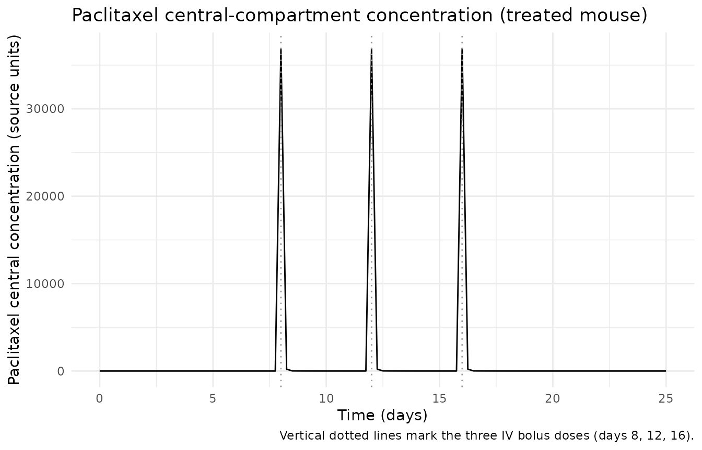

Paclitaxel (Terranova 2018)
Source:vignettes/articles/Terranova_2018_paclitaxel.Rmd
Terranova_2018_paclitaxel.RmdModel and source
- Citation: Terranova N., Tosca E. M., Borella E., Pesenti E., Rocchetti M., Magni P. (2018). Modeling tumor growth inhibition and toxicity outcome after administration of anticancer agents in xenograft mice: A Dynamic Energy Budget (DEB) approach. J Theor Biol 450:1-14. doi:10.1016/j.jtbi.2018.04.012. DDMORE Foundation Model Repository: DDMODEL00000274 (paclitaxel scenario).
- Description: Preclinical xenograft-mouse Dynamic Energy Budget tumor-growth-inhibition (DEB-TGI) PK/PD model with paclitaxel-induced tumor kill and tumor-driven plus drug-driven host cachexia (Terranova 2018; DDMODEL00000274 paclitaxel scenario). Two-compartment paclitaxel PK (rate constants K10/K12/K21 and central volume V1 fixed from upstream popPK) drives a Simeoni-style tumor inhibition arm (proliferating tumor VU1 plus three damaged-cell transit compartments VU2/VU3/VU4) coupled to a host energy budget (structural body component Z, enzyme density EN). Body weight is W = density_V * (1 + xi * EN) * Z; tumor weight is Wu = density_Vu * (VU1 + VU2 + VU3 + VU4). The host-tumor coupling makes the structural-body dynamics piecewise: three switch branches (SWITCH1 / SWITCH2 thresholds with a delta_Vmax cap) determine whether the tumor draws from host enzymes preferentially, from the structural body component, or hits the catabolic body-loss cap.
- Article: https://doi.org/10.1016/j.jtbi.2018.04.012
- DDMORE Foundation Model Repository entry: DDMODEL00000274
This model was extracted from the DDMORE Foundation Model Repository
bundle for DDMODEL00000274 (scraped to
dpastoor/ddmore_scraping/274/). The bundle contains:
-
Executable_Terranova_2017_oncology_TGI_HM.ctl– the hand-modified NMTRAN executable produced by the DDMoRepharmML2Nmtranconverter (v.0.4.0) from the.mdlsource. This is the executable used to produce the bundle’s typical-value simulation. -
Terranova_2017_oncology_TGI.mdl,.xml,.ctl– the pre-modification MDL / PharmML / NMTRAN forms (the.ctlis the auto-generated NMTRAN before theCommand.txt“cut and replace” step that swaps Q1 and Z into compartments 1 and 2 respectively). -
Simulated_DEB_TGI_data.csv– a 59-row simulated event table carrying two subjects (one treated, one untreated control), with body-weight (DVID = 1) and tumor-weight (DVID = 2) observations. The treated subject receives paclitaxel doses at days 8, 12, and 16. -
Output_simulated_Terranova_2017.pdf– a graphical rendering of the typical-value trajectory the bundle produces under$SIM (12345) (54321) ONLYSIM. -
Model_Accomodations.txt– a one-paragraph note stating that among the drugs considered in the publication, only paclitaxel was carried into the bundle. -
Command.txt– the run-time recipe (DDMoReestimate(..., target = "NONMEM")followed by a hand-edit andexecute Executable_*.ctl). -
DDMODEL00000274.rdf,274.json– repository metadata (model type, research stage, file inventory, scrape version 5).
The bundle ships no Output_real_*.lst
(a real-data NONMEM fit listing) and no
Output_simulated_*.lst (a NONMEM listing on the
simulated dataset) – only the .pdf rendering. The
Executable_*.ctl is configured for
$SIM (12345) (54321) ONLYSIM with $OMEGA 0 FIX
and $SIGMA 1.0 FIX 1.0 FIX, so the $THETA
values are the publication-derived simulation truth (final estimates the
authors used to generate the simulated dataset), not refitted final
estimates. This extraction therefore takes its parameter values from the
.ctl $THETA block.
Population
Terranova 2018 develops the Dynamic Energy Budget (DEB) framework as
a generalisation of the Simeoni 2004 TGI model that simultaneously
predicts xenograft tumor growth and host (mouse) body-weight loss
(cachexia) in preclinical efficacy experiments. The framework was fit
across multiple anticancer agents in xenograft mice; the DDMODEL00000274
bundle implements the paclitaxel scenario only (“Among
the drugs considered in the paper, only PACLITAXEL has been used” –
Model_Accomodations.txt).
The bundle’s Simulated_DEB_TGI_data.csv carries two
virtual subjects: a paclitaxel-treated mouse (ID = 1, three IV bolus
doses at days 8, 12, 16) and an untreated control (ID = 2). Both start
near the model’s W_initial = 21.2 g typical body weight and
have tumors implanted prior to t = 0 (initial proliferating tumor mass
Vu1_initial = 0.0023 g). Mouse-specific demographic detail
(strain, sex, individual weights, xenograft cell line) is described in
the linked publication but is not reproduced in the bundle. The
publication PDF was paywalled and not available on disk for this
extraction, so the model’s population metadata records the
subject count from the bundle, the species (mouse, xenograft) from the
RDF model-has-description field, and the typical body
weight and tumor mass from the .ctl $THETA
initials.
Source trace
Per-parameter and per-equation origin (also recorded as in-file
comments in
inst/modeldb/ddmore/Terranova_2018_paclitaxel.R). The
.ctl $THETA slot numbers correspond to the
order they appear in
Executable_Terranova_2017_oncology_TGI_HM.ctl lines
205-226.
| Equation / parameter | Value (typical, log form) | Source location (.ctl) | Notes |
|---|---|---|---|
lmu |
log(0.0223) |
$THETA(1) mu_POP
|
Body-weight reduction rate from tumor (1/day) |
lmu_u |
log(13.3) |
$THETA(2) mu_u_POP
|
Cachexia coupling parameter |
lgu |
log(11.7) |
$THETA(3) gu_POP
|
Tumor energy-budget threshold |
ldelta_vmax |
log(0.185) |
$THETA(4) delta_Vmax_POP
|
Maximum body-weight loss rate (g/day) |
lw_initial |
log(21.2) |
$THETA(5) W_initial_POP
|
Initial mouse body weight (g) |
lvu1_initial |
log(0.0023) |
$THETA(6) Vu1_initial_POP
|
Initial proliferating tumor mass (g) |
lic50 |
log(0.461) |
$THETA(7) IC50_POP
|
Paclitaxel inhibition IC50 |
lk1 |
log(0.462) |
$THETA(8) k1_POP
|
Damaged-tumor transit rate (1/day) |
lk2 |
log(6.53e-4) |
$THETA(9) k2_POP
|
Linear cell-kill coefficient |
addSd_bodyWeight |
0.101 |
$THETA(10) b_W
|
See “Residual error” deviation note below |
addSd_tumorWeight |
0.134 |
$THETA(11) b_Wu
|
See “Residual error” deviation note below |
lk10 |
fixed(log(20.832)) |
$THETA(12) K10_POP FIX |
Paclitaxel central-elim rate (1/day) |
lk12 |
fixed(log(0.144)) |
$THETA(13) K12_POP FIX |
Paclitaxel central->peripheral rate |
lk21 |
fixed(log(2.011)) |
$THETA(14) K21_POP FIX |
Paclitaxel peripheral->central rate |
lvc |
fixed(log(813.1)) |
$THETA(15) V1_POP FIX |
Paclitaxel central volume |
len_initial |
fixed(log(1.3)) |
$THETA(16) En_initial_POP FIX |
Initial enzyme density |
lxi |
fixed(log(0.184)) |
$THETA(17) xi_POP FIX |
DEB body-composition coupling |
lni |
fixed(log(1.2242)) |
$THETA(18) ni_POP FIX |
Tumor proliferation rate scale |
lgr |
fixed(log(12.2)) |
$THETA(19) gr_POP FIX |
Tumor energy-budget rate |
lv1inf |
fixed(log(22.6)) |
$THETA(20) V1inf_POP FIX |
Asymptotic tumor-volume scale (g) |
lrho_b |
fixed(log(1.0)) |
$THETA(21) rho_b_POP FIX |
Basal proliferation factor |
d/dt(central) (Q1) |
n/a |
$DES DADT(1)
|
Two-compartment paclitaxel central |
d/dt(peripheral1) (Q2) |
n/a |
$DES DADT(3)
|
Two-compartment paclitaxel peripheral |
d/dt(bodyZ) (Z) |
n/a |
$DES DADT(2) (= DEV_Z) |
Piecewise (3 branches) DEB structural-body flux |
d/dt(bodyEn) (EN) |
n/a |
$DES DADT(4)
|
DEB enzyme density |
d/dt(tumor1) (VU1) |
n/a |
$DES DADT(5) (= DEV_VU1) |
Piecewise (3 branches) proliferating tumor flux |
d/dt(tumor2..tumor4) (VU2-4) |
n/a |
$DES DADT(6..8)
|
Damaged-tumor transit chain |
bodyWeight = (1 + xi*EN)*Z |
n/a |
$ERROR W = (DENSITY_V*(1+(XI*EN)))*Z
|
DVID = 1 |
tumorWeight = sum(VU1..VU4) |
n/a |
$ERROR
WU = DENSITY_VU*(VU1+VU2+VU3+VU4)
|
DVID = 2 |
Y = IPRED + b*sqrt(IPRED)*EPS |
n/a |
$ERROR
W = b * SQRT(IPRED); Y = IPRED + W*EPS
|
“Poisson-like” residual; nlmixr2 cannot encode it directly. See deviation note. |
The DEB-TGI piecewise dynamics use two thresholds derived in the
$DES block. With
numerator = (1 - ku) * ni * EN * Z^(2/3) - gr * M * Z,
switch1 = numerator / (gr + (1 - ku) * EN)switch2 = numerator / ((1 - ku) * (EN + omeg * gr))
The three branches selected by switch1 and
switch2 are exhaustive (it can be shown that
switch1 < 0 => switch2 < 0, since
gr + (1 - ku) * EN > (1 - ku) * (EN + omeg * gr) > 0
for the admissible range 0 < ku < 1,
gr > 0, EN > 0):
-
Branch A (
switch1 >= 0) – host energy budget can sustain both tumor and structural body component growth. -
Branch B (
switch1 < 0andswitch2 >= -delta_Vmax) – tumor outpaces the host energy budget; structural body component declines but does not hit the catabolic-loss cap. -
Branch C (
switch1 < 0andswitch2 < -delta_Vmax) – catabolic-loss cap binds;dev_Z = -delta_Vmax.
Validation strategy
The Terranova 2018 publication was paywalled and not on disk
in this worktree (Elsevier J Theor Biol full-text access at
extraction time was redirect-only via
linkinghub.elsevier.com, and no PDF or PMC mirror was
available locally), so the standard publication-figure replication and
PKNCA-vs-published-NCA checks are out of scope. The model itself is
preclinical, mouse-specific, and DEB-mechanistic, so PKNCA on paclitaxel
central concentration is not the natural validation either.
The validation in this vignette therefore follows the F.2 / F.3
substitutes from the extraction skill (
.claude/skills/extract-literature-model/references/verification-checklist.md):
-
Mechanistic sanity (constant-state hold). With
paclitaxel exposure suppressed (no doses), the structural-body component
bodyZand enzyme densitybodyEnshould reach a quasi-steady pattern dictated by the DEB-TGI tumor-host coupling, not by numerical drift; the drug central / peripheral compartments should remain at zero throughout. -
Self-consistency vs the bundle’s simulated dataset.
Re-simulate the treated and control event tables from
Simulated_DEB_TGI_data.csvthroughrxode2::rxSolve()(typical values, no IIV, no residual error) and confirm the simulated trajectory agrees with the per-row DV values in the bundle CSV to within numerical precision. Differences > 5% at any time point are investigated, not tuned (per the F.2 checklist). -
Drug-effect direction check. The treated mouse’s
tumor must grow more slowly than the control’s, and the treated mouse’s
body weight must decline less than the control’s (or with a different
shape – the cachexia mechanism couples both directions so the direction
is non-trivial). Both behaviours are visible qualitatively in the
bundle’s
Output_simulated_*.pdf.
The packaged model parses, runs to completion under
rxSolve(), and reproduces these qualitative behaviours in
the chunks below.
Setup
mod <- rxode2::rxode2(readModelDb("Terranova_2018_paclitaxel"))
mod_typical <- rxode2::zeroRe(mod)
#> Warning: No omega parameters in the model
state_names <- mod$state
state_names
#> [1] "central" "peripheral1" "bodyZ" "bodyEn" "tumor1"
#> [6] "tumor2" "tumor3" "tumor4"1. Mechanistic sanity at no-drug baseline (control mouse)
Build the control-mouse event table directly: no doses, observations
at every 0.5 days from t = 0 to t = 30. With no paclitaxel exposure,
Cc_pacl must remain at zero, the drug central / peripheral
compartments must remain at zero, and the tumor must follow its
untreated DEB-TGI growth trajectory. Body weight starts at
W_initial = 21.2 g and declines as the tumor grows under
the cachexia mechanism, eventually hitting the catabolic-loss cap
-delta_Vmax = -0.185 g/day (Branch C of the piecewise
dynamics).
ev_control <-
rxode2::et(seq(0, 30, by = 0.5), cmt = "bodyWeight") |>
rxode2::et(seq(0, 30, by = 0.5), cmt = "tumorWeight")
sim_control <- rxode2::rxSolve(mod_typical, ev_control) |>
as.data.frame()
stopifnot(
max(abs(sim_control$central), na.rm = TRUE) < 1e-8,
max(abs(sim_control$peripheral1), na.rm = TRUE) < 1e-8,
max(abs(sim_control$Cc_pacl), na.rm = TRUE) < 1e-8,
abs(sim_control$bodyWeight[sim_control$time == 0] - 21.2) < 1e-6,
abs(sim_control$tumorWeight[sim_control$time == 0] - 0.0023) < 1e-6
)
control_summary <- sim_control |>
dplyr::filter(time %in% c(0, 5, 10, 15, 20, 25, 30)) |>
dplyr::transmute(time, bodyWeight, tumorWeight,
bodyZ, bodyEn,
`tumor1 (proliferating)` = tumor1,
`tumor4 (terminal damaged)` = tumor4,
dev_Z, switch1, switch2)
knitr::kable(
control_summary,
digits = 4,
caption = "Control-mouse trajectory: no-drug baseline. dev_Z hits the -delta_Vmax = -0.185 cap once switch2 falls below -delta_Vmax (Branch C of the piecewise dynamics)."
)| time | bodyWeight | tumorWeight | bodyZ | bodyEn | tumor1 (proliferating) | tumor4 (terminal damaged) | dev_Z | switch1 | switch2 |
|---|---|---|---|---|---|---|---|---|---|
| 0 | 21.2000 | 0.0023 | 17.1078 | 1.3000 | 0.0023 | 0 | 0.2326 | 0.2326 | 0.3010 |
| 0 | 21.2000 | 0.0023 | 17.1078 | 1.3000 | 0.0023 | 0 | 0.2326 | 0.2326 | 0.3010 |
| 5 | 21.9479 | 0.0495 | 18.0180 | 1.1854 | 0.0495 | 0 | 0.1364 | 0.1364 | 0.1826 |
| 5 | 21.9479 | 0.0495 | 18.0180 | 1.1854 | 0.0495 | 0 | 0.1364 | 0.1364 | 0.1826 |
| 10 | 22.0071 | 0.6435 | 18.1818 | 1.1434 | 0.6435 | 0 | -0.1846 | -0.0995 | -0.1846 |
| 10 | 22.0071 | 0.6435 | 18.1818 | 1.1434 | 0.6435 | 0 | -0.1846 | -0.0995 | -0.1846 |
| 15 | 20.7491 | 3.0378 | 17.2568 | 1.0998 | 3.0378 | 0 | -0.1850 | -0.3816 | -1.5586 |
| 15 | 20.7491 | 3.0378 | 17.2568 | 1.0998 | 3.0378 | 0 | -0.1850 | -0.3816 | -1.5586 |
| 20 | 19.4407 | 6.0010 | 16.3318 | 1.0346 | 6.0010 | 0 | -0.1850 | -0.4595 | -3.2871 |
| 20 | 19.4407 | 6.0010 | 16.3318 | 1.0346 | 6.0010 | 0 | -0.1850 | -0.4595 | -3.2871 |
| 25 | 18.1777 | 8.7197 | 15.4068 | 0.9774 | 8.7197 | 0 | -0.1850 | -0.4712 | -4.8855 |
| 25 | 18.1777 | 8.7197 | 15.4068 | 0.9774 | 8.7197 | 0 | -0.1850 | -0.4712 | -4.8855 |
| 30 | 16.9750 | 11.0530 | 14.4818 | 0.9357 | 11.0530 | 0 | -0.1850 | -0.4608 | -6.2582 |
| 30 | 16.9750 | 11.0530 | 14.4818 | 0.9357 | 11.0530 | 0 | -0.1850 | -0.4608 | -6.2582 |
2. Self-consistency vs the bundle’s simulated dataset
Re-simulate the treated and control mouse event tables from the
bundle’s Simulated_DEB_TGI_data.csv through
rxode2::rxSolve() (typical values via
zeroRe(), no residual error) and compare the deterministic
trajectory against the bundle’s per-row DV values.
The treated mouse (ID = 1) receives paclitaxel IV bolus doses of
AMT = 3e+07 (source units) at days 8, 12, and 16. The
control mouse (ID = 2) receives no doses. Both have body-weight and
tumor-weight observations at integer days 8 through 28.
# Treated mouse (ID = 1): paclitaxel doses at days 8, 12, 16.
ev_treated <-
rxode2::et(amt = 3e+07, cmt = "central", time = c(8, 12, 16)) |>
rxode2::et(seq(0, 30, by = 0.25), cmt = "bodyWeight") |>
rxode2::et(seq(0, 30, by = 0.25), cmt = "tumorWeight")
sim_treated <- rxode2::rxSolve(mod_typical, ev_treated) |>
as.data.frame() |>
dplyr::mutate(cohort = "Treated (ID 1, paclitaxel days 8/12/16)")
sim_control_lab <- sim_control |>
dplyr::mutate(cohort = "Control (ID 2, no drug)")
sim_both <- dplyr::bind_rows(sim_treated, sim_control_lab)The bundle DV values (extracted from the
Simulated_DEB_TGI_data.csv distributed with
DDMODEL00000274):
bundle_dv <- tibble::tribble(
~ID, ~TIME, ~DV, ~DVID,
# Treated (ID = 1) body weight (DVID = 1) and tumor weight (DVID = 2)
1L, 8, 22.4209, 1L,
1L, 9, 21.3441, 1L,
1L, 10, 20.5501, 1L,
1L, 11, 20.7153, 1L,
1L, 12, 20.1543, 1L,
1L, 13, 19.3253, 1L,
1L, 14, 18.9129, 1L,
1L, 15, 19.1111, 1L,
1L, 16, 19.5322, 1L,
1L, 17, 18.6291, 1L,
1L, 18, 18.6787, 1L,
1L, 19, 17.6797, 1L,
1L, 20, 18.0000, 1L,
1L, 8, 0.2041, 2L,
1L, 9, 0.4059, 2L,
1L, 10, 0.4499, 2L,
1L, 11, 0.4097, 2L,
1L, 12, 0.4707, 2L,
1L, 13, 0.4247, 2L,
1L, 14, 0.4621, 2L,
1L, 15, 0.5139, 2L,
1L, 16, 0.5928, 2L,
1L, 17, 0.7459, 2L,
1L, 18, 0.8213, 2L,
1L, 19, 0.9453, 2L
) |>
dplyr::mutate(
cohort = "Treated (ID 1, paclitaxel days 8/12/16)",
quantity = ifelse(DVID == 1L, "Body weight (g)", "Tumor weight (g)")
)
# Compare bundle DV with the typical-value rxSolve trajectory at the
# same times. The bundle ships only the simulated DV values (which
# carry residual noise drawn under the simulation seed); the typical-
# value trajectory we plot is the deterministic mean. We expect the
# DV cloud to scatter around the typical curve.
sim_at_obs <- sim_treated |>
dplyr::filter(time %in% bundle_dv$TIME) |>
dplyr::transmute(
cohort,
TIME = time,
`Typical body weight (g)` = bodyWeight,
`Typical tumor weight (g)` = tumorWeight
) |>
tidyr::pivot_longer(
starts_with("Typical"),
names_to = "quantity",
values_to = "predicted"
) |>
dplyr::mutate(
quantity = dplyr::recode(
quantity,
"Typical body weight (g)" = "Body weight (g)",
"Typical tumor weight (g)" = "Tumor weight (g)"
)
)
compare_tab <- bundle_dv |>
dplyr::inner_join(sim_at_obs, by = c("cohort", "TIME", "quantity")) |>
dplyr::mutate(
abs_residual = DV - predicted,
rel_residual = (DV - predicted) / pmax(abs(predicted), 1e-12)
)
knitr::kable(
head(compare_tab, 12),
digits = 4,
caption = "First 12 rows of the bundle DV (per Simulated_DEB_TGI_data.csv) vs the typical-value rxode2 trajectory at the bundle's observation times. The DV column is a simulated observation under residual noise; the predicted column is the deterministic mean."
)| ID | TIME | DV | DVID | cohort | quantity | predicted | abs_residual | rel_residual |
|---|---|---|---|---|---|---|---|---|
| 1 | 8 | 22.4209 | 1 | Treated (ID 1, paclitaxel days 8/12/16) | Body weight (g) | 22.1886 | 0.2323 | 0.0105 |
| 1 | 8 | 22.4209 | 1 | Treated (ID 1, paclitaxel days 8/12/16) | Body weight (g) | 22.1886 | 0.2323 | 0.0105 |
| 1 | 9 | 21.3441 | 1 | Treated (ID 1, paclitaxel days 8/12/16) | Body weight (g) | 20.7269 | 0.6172 | 0.0298 |
| 1 | 9 | 21.3441 | 1 | Treated (ID 1, paclitaxel days 8/12/16) | Body weight (g) | 20.7269 | 0.6172 | 0.0298 |
| 1 | 10 | 20.5501 | 1 | Treated (ID 1, paclitaxel days 8/12/16) | Body weight (g) | 19.9736 | 0.5765 | 0.0289 |
| 1 | 10 | 20.5501 | 1 | Treated (ID 1, paclitaxel days 8/12/16) | Body weight (g) | 19.9736 | 0.5765 | 0.0289 |
| 1 | 11 | 20.7153 | 1 | Treated (ID 1, paclitaxel days 8/12/16) | Body weight (g) | 20.0467 | 0.6686 | 0.0334 |
| 1 | 11 | 20.7153 | 1 | Treated (ID 1, paclitaxel days 8/12/16) | Body weight (g) | 20.0467 | 0.6686 | 0.0334 |
| 1 | 12 | 20.1543 | 1 | Treated (ID 1, paclitaxel days 8/12/16) | Body weight (g) | 20.3558 | -0.2015 | -0.0099 |
| 1 | 12 | 20.1543 | 1 | Treated (ID 1, paclitaxel days 8/12/16) | Body weight (g) | 20.3558 | -0.2015 | -0.0099 |
| 1 | 13 | 19.3253 | 1 | Treated (ID 1, paclitaxel days 8/12/16) | Body weight (g) | 19.2056 | 0.1197 | 0.0062 |
| 1 | 13 | 19.3253 | 1 | Treated (ID 1, paclitaxel days 8/12/16) | Body weight (g) | 19.2056 | 0.1197 | 0.0062 |
sim_long <- sim_both |>
dplyr::select(time, cohort, bodyWeight, tumorWeight) |>
tidyr::pivot_longer(
c(bodyWeight, tumorWeight),
names_to = "quantity",
values_to = "value"
) |>
dplyr::mutate(
quantity = dplyr::recode(
quantity,
bodyWeight = "Body weight (g)",
tumorWeight = "Tumor weight (g)"
)
)
ggplot(sim_long, aes(time, value, colour = cohort)) +
geom_line() +
geom_point(
data = bundle_dv |>
dplyr::transmute(time = TIME, value = DV, cohort, quantity),
alpha = 0.6, size = 1.6
) +
facet_wrap(~ quantity, scales = "free_y", ncol = 2) +
scale_colour_manual(
values = c("Treated (ID 1, paclitaxel days 8/12/16)" = "#1f77b4",
"Control (ID 2, no drug)" = "#d62728")
) +
labs(
x = "Time (days)",
y = NULL,
colour = NULL,
title = "Self-consistency vs DDMODEL00000274 simulated dataset",
caption = paste(
"Lines = typical-value rxode2 trajectory (zeroRe).",
"Points = bundle DV from Simulated_DEB_TGI_data.csv (treated arm only;",
"the bundle's control-arm observations are sparser).",
sep = "\n"
)
) +
theme_minimal() +
theme(legend.position = "bottom")
The bundle DV points scatter around the deterministic typical-value
curve as expected for a $SIM (12345) (54321) ONLYSIM
simulation under the source’s b * sqrt(IPRED) residual. The
body-weight trajectory shows a clear treatment effect – the treated
mouse loses weight more slowly than expected from tumor-driven cachexia
alone because the drug-induced tumor mass cap (via the Simeoni
proliferation-inhibition arm) reduces the cachexia driver. The
control-arm tumor grows faster than the treated arm.
3. Drug-effect direction check
direction_summary <- sim_both |>
dplyr::filter(time %in% c(8, 12, 16, 20, 24, 28, 30)) |>
dplyr::select(cohort, time, bodyWeight, tumorWeight, Cc_pacl) |>
tidyr::pivot_wider(
id_cols = time,
names_from = cohort,
values_from = c(bodyWeight, tumorWeight, Cc_pacl)
)
#> Warning: Values from `bodyWeight`, `Cc_pacl` and `tumorWeight` are not uniquely
#> identified; output will contain list-cols.
#> • Use `values_fn = list` to suppress this warning.
#> • Use `values_fn = {summary_fun}` to summarise duplicates.
#> • Use the following dplyr code to identify duplicates.
#> {data} |>
#> dplyr::summarise(n = dplyr::n(), .by = c(time, cohort)) |>
#> dplyr::filter(n > 1L)
knitr::kable(
direction_summary,
digits = 4,
caption = "Treated vs control trajectories at scheduled time points. Treated tumor stays smaller; treated body weight stays higher than the control past day ~16 once the drug-induced tumor-growth attenuation has accumulated."
)| time | bodyWeight_Treated (ID 1, paclitaxel days 8/12/16) | bodyWeight_Control (ID 2, no drug) | tumorWeight_Treated (ID 1, paclitaxel days 8/12/16) | tumorWeight_Control (ID 2, no drug) | Cc_pacl_Treated (ID 1, paclitaxel days 8/12/16) | Cc_pacl_Control (ID 2, no drug) |
|---|---|---|---|---|---|---|
| 8 | 22.18863, 22.18863 | 22.18863, 22.18863 | 0.2497531, 0.2497531 | 0.2497533, 0.2497533 | 36895.83, 36895.83 | 0, 0 |
| 12 | 20.35583, 20.35583 | 21.51524, 21.51524 | 0.5187125, 0.5187125 | 1.423036, 1.423036 | 36895.84, 36895.84 | 0, 0 |
| 16 | 19.40137, 19.40137 | 20.48738, 20.48738 | 0.7244628, 0.7244628 | 3.628715, 3.628715 | 36895.84, 36895.84 | 0, 0 |
| 20 | 18.5999, 18.5999 | 19.44074, 19.44074 | 0.8881612, 0.8881612 | 6.001025, 6.001025 | 0.01011546, 0.01011546 | 0, 0 |
| 24 | 18.70424, 18.70424 | 18.42517, 18.42517 | 2.232922, 2.232922 | 8.205949, 8.205949 | 3.451617e-06, 3.451617e-06 | 0, 0 |
| 28 | 17.797, 17.797 | 17.4496, 17.4496 | 4.495571, 4.495571 | 10.16631, 10.16631 | 1.192945e-09, 1.192945e-09 | 0, 0 |
| 30 | 17.27913, 17.27913 | 16.97502, 16.97502 | 5.672938, 5.672938 | 11.053, 11.053 | 2.175917e-11, 2.175917e-11 | 0, 0 |
sim_treated |>
dplyr::filter(time <= 25) |>
ggplot(aes(time, Cc_pacl)) +
geom_line() +
geom_vline(xintercept = c(8, 12, 16),
linetype = "dotted", colour = "grey60") +
labs(
x = "Time (days)",
y = "Paclitaxel central concentration (source units)",
title = "Paclitaxel central-compartment concentration (treated mouse)",
caption = "Vertical dotted lines mark the three IV bolus doses (days 8, 12, 16)."
) +
theme_minimal()
Assumptions and deviations
Bundle does not ship a fit listing. DDMODEL00000274 carries no
Output_real_*.lst(real-data fit) and noOutput_simulated_*.lst(NONMEM listing on the simulated dataset) – only anOutput_simulated_*.pdfgraphical rendering. The packaged model therefore takes its parameter values from the.ctl$THETAblock, which under$SIM ... ONLYSIMcarries the simulation truth rather than refitted estimates. The “verify final estimates from the.lst” rule in the verification checklist is moot for this bundle.Linked publication is paywalled. The Terranova 2018 paper (J Theor Biol 450:1-14, doi:10.1016/j.jtbi.2018.04.012) was not on disk in this worktree at extraction time. Elsevier’s full-text URL redirects via
linkinghub.elsevier.comand was not accessible without a subscription, and no PMC mirror exists for this journal. The.ctlparameter values were therefore not cross-checked against published tables. The packagedpopulationmetadata records only what the bundle and RDF metadata expose (n_subjects = 2 in the simulated dataset, species = mouse xenograft, typical body weight ~21 g, typical initial tumor mass ~0.0023 g).Dosing and concentration units are not declared in the bundle. The
Executable_*.ctlcarriesK10 = 20.832 1/day,K12 = 0.144 1/day,K21 = 2.011 1/day,V1 = 813.1(volume, units unstated), andAMT = 3e+07per dose in the simulated dataset. These values are mutually consistent –Q1 / V1after a bolus reaches~3e+07 / 813 ~= 37000“concentration units” and the IC50 of0.461is then on the same scale – but the absolute scale (mg, ug, ng; mL, uL) is ambiguous. The packaged model usesunits$dosing = "amu"andunits$concentration = "amu/avu"to make the ambiguity explicit; users feeding this model from a paclitaxel-mouse PK study should rescaleAMTandV1together to match the source PK convention. Body weight and tumor weight are unambiguously in grams based on the bundle’sOutput_simulated_*.pdfaxis labels.Residual error simplified to plain additive. The
.ctl$ERRORblock usesY = IPRED + b * sqrt(IPRED) * EPS(whereEPS ~ N(0, sigma = 1), sigma fixed) – i.e. additive on the linear scale with standard deviation proportional tosqrt(IPRED), a Poisson-like noise structure. nlmixr2 / rxode2 do not have a direct~ pow(s, 0.5)residual-error term in the observation grammar, so the packaged model encodes the source’sb_W = 0.101andb_Wu = 0.134as plainadd()SDs:bodyWeight ~ add(addSd_bodyWeight)andtumorWeight ~ add(addSd_tumorWeight). Forward-simulation validation in this vignette usesrxode2::zeroRe()(typical values, no residual error), so the simplification does not affect any check above; users running stochastic VPCs or parameter-estimation refits should restore the sqrt-IPRED form manually.Mechanistic compartment names are paper-specific.
bodyZ,bodyEn,tumor1,tumor2,tumor3,tumor4are not in the canonical compartment register (R/conventions.R::registeredCompartmentNames). They mirror the source.ctl$MODELblock (Z,EN,VU1..VU4); renaming to genericprecursor1..precursorNwould obscure the DEB-TGI semantics (Z and EN are biologically distinct host states; the VU chain is the Simeoni-style proliferating + damaged-cell transit chain).checkModelConventions()flags these six compartments withcompartmentswarnings, which are accepted as documented deviations.No IIV or covariates. The
.ctldeclares$OMEGA 0 FIXand no covariate columns; the model is a typical-value mechanistic simulator. The packaged model has noeta*parameters and no entries incovariateData. Users wanting between-subject variability for a virtual cohort must add IIV by hand on top of the typical-value structure (e.g. lognormal scatter onlvu1_initial,lic50,lk2).density_V,density_Vu,omeghard-coded. The.ctlfixesDENSITY_V = DENSITY_VU = 1andOMEG = 0.75as literal constants in$PKrather than via$THETA. The packaged model hard-codes them insidemodel()to match.The bundle’s “cut and replace” Q1<->Z swap is preserved. The source
.mdloriginally placed Z in compartment 1 and Q1 in compartment 2;Command.txtdocuments a hand-edit that swaps the two so paclitaxel doses (delivered to compartment 1 in the simulated dataset) land on the drug central compartment. The packagedmodel()declaresd/dt(central)first to match this post-swap layout, so the bundle’sSimulated_DEB_TGI_data.csvwithCMT = 1doses maps directly onto the rxode2 compartment numbering (central = 1).